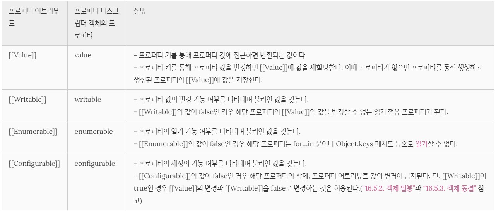
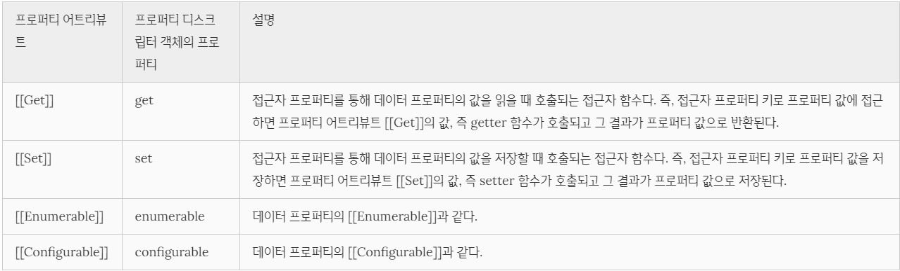
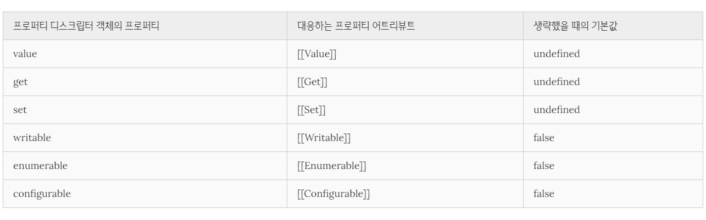
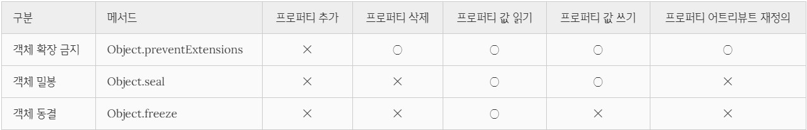

16. 프로퍼티 어트리뷰트
Table of Contents
- 1. 1) 내부 슬롯과 내부 메서드
- 2. 2) 프로퍼티 어트리뷰트와 프로퍼티 디스크립터 객체
- 3. 3) 데이터 프로퍼티와 접근자 프로퍼티
- 4. 4) 프로퍼티 정의
- 5. 5) 객체 변경 방지
1) 내부 슬롯과 내부 메서드
- 📒 내부 슬롯과 내부 메서드
자바스크립트 엔진의 구현 알고리즘을 설명하기 위해 ECMAScript 사양에서 사용하는 pseudo property(의사 프로퍼티)와 pseudo method(의사 메서드). - 이중 대괄호([[]])로 감싸 표기한다.
- 자바스크립트 엔진의 내부 로직이므로 외부로 공개되지 않고 감춰져 있다.
그러므로 원칙적으로 자바스크립트는 내부 슬롯과 내부 메서드에 직접적으로 접근하거나 호출할 수 있는 방법을 제공하지 않는다. - 단, 일부 내부 슬롯과 내부 메서드에 한하여 간접적으로 접근할 수 있는 수단을 제공하기는 한다.
예를 들어, 모든 객체는 [[Prototype]]이라는 내부 슬롯을 갖는다. 내부 슬롯은 자바스크립트 엔진의 내부 로직이므로 원칙적으로 직접 접근할 수 없지만 [[Prototype]] 내부 슬롯의 경우__proto__를 통해 간접적으로 접근할 수 있다.
2) 프로퍼티 어트리뷰트와 프로퍼티 디스크립터 객체
- 자바스크립트 엔진은 프로퍼티를 생성할 때 프로퍼티의 상태를 나타내는 프로퍼티 어트리뷰트를 기본값으로 자동 정의한다.
- 📒 프로퍼티 어트리뷰트
: 자바스크립트 엔진이 관리하는 내부 상태 값(meta-property)인 내부 슬롯 [[Value]], [[Writable]], [[Enumerable]], [[Configurable]]- value : 프로퍼티의 값
- writable : 값의 변경 가능 여부
- enumerable : 열거 가능 여부
- configurable : 재정의 가능 여부
- 프로퍼티 어트리뷰트에 직접 접근할 수 없지만
Object.getOwnPropertyDescriptor메서드를 사용하여 간접적으로 확인 가능하다.1
2
3
4
5
6
7const person = {
name: 'Lee'
};
// 프로퍼티 어트리뷰트 정보를 제공하는 프로퍼티 디스크립터 객체를 반환한다.
console.log(Object.getOwnPropertyDescriptor(person, 'name'));
// {value: "Lee", writable: true, enumerable: true, configurable: true} - 메서드를 호출할 때 첫 번째 매개변수에는 객체의 참조를 전달하고 두 번째 매개변수에는 프로퍼티 키를 문자열로 전달한다.
(🔴주의!) 위의 ‘name’과 같이 프로퍼티 키를 꼭 문자열로 전달해야 한다. Object.getOwnPropertyDescriptor메서드는 프로퍼티 어트리뷰트 정보를 제공하는 프로퍼티 디스크립터(PropertyDescriptor) 객체를 반환한다. 만약 존재하지 않는 프로퍼티나 상속받은 프로퍼티에 대한 프로퍼티 디스크립터를 요구하면 undefined가 반환된다.
3) 데이터 프로퍼티와 접근자 프로퍼티
- 프로퍼티는 데이터 프로퍼티와 접근자 프로퍼티로 구분할 수 있다.
- 📒 데이터 프로퍼티(data property)
키와 값으로 구성된 일반적인 프로퍼티. - 📒 접근자 프로퍼티(accessor property)
자체적으로는 값을 갖지 않고 다른 데이터 프로퍼티의 값을 읽거나 저장할 때 호출되는 접근자 함수(accessor function)로 구성된 프로퍼티
- 📒 데이터 프로퍼티(data property)
3.1. 데이터 프로퍼티(data property)
- 데이터 프로퍼티의 프로퍼티 어트리뷰트는 자바스크립트 엔진이 프로퍼티를 생성할 때 기본값으로 자동 정의된다.
데이터 프로퍼티
1 | const person = { |
- Object.getOwnPropertyDescriptor 메서드가 반환한 프로퍼티 디스크립터 객체를 살펴보면 value 프로퍼티의 값은 ‘Lee’다. 이것은 프로퍼티 어트리뷰트 [[Value]]의 값이 ‘Lee’인 것을 의미한다.
- writable, enumerable, configurable 프로퍼티의 값은 모두 true다. 이것은 프로퍼티 어트리뷰트 [[Writable]], [[Enumerable]], [[Configurable]]의 값이 모두 true인 것을 의미한다.
- 프로퍼티가 생성될 때 [[Value]]의 값은 프로퍼티 값으로 초기화되며 [[Writable]], [[Enumerable]], [[Configurable]]의 값은 true로 초기화된다. 이것은 프로퍼티를 동적 추가해도 마찬가지다.
3.2. 접근자 프로퍼티(accessor property)
- 접근자 프로퍼티는 자체적으로는 값을 갖지 않고 다른 데이터 프로퍼티의 값을 읽거나 저장할 때 사용하는 접근자 함수로 구성된 프로퍼티 이다.
- 접근자 함수는 getter/setter 함수라고도 부른다.
접근자 프로퍼티는 getter와 setter 함수를 모두 정의할 수도 있고 하나만 정의할 수도 있다. - 접근자 프로퍼티는 자체적으로 값(프로퍼티 어트리뷰트 [[Value]])을 가지지 않으며 다만 데이터 프로퍼티의 값을 읽거나 저장할 때 관여할 뿐이다.
접근자 프로퍼티
1 | const person = { |
- 접근자 프로퍼티와 데이터 프로퍼티를 구별하는 방법
1 | // 일반 객체의 __proto__는 접근자 프로퍼티다. |
4) 프로퍼티 정의
- 📒 프로퍼티 정의 :
새로운 프로퍼티를 추가하면서 프로퍼티 어트리뷰트를 명시적으로 정의하거나, 기존 프로퍼티의 프로퍼티 어트리뷰트를 재정의하는 것Object.defineProperty메서드를 사용한다.
4.1. 데이터 프로퍼티의 정의
1 | const person = {}; |
- Object.defineProperty 메서드로 프로퍼티를 정의할 때 프로퍼티 디스크립터 객체의 프로퍼티를 일부 생략할 수 있다. 프로퍼티 디스크립터 객체에서 생략된 어트리뷰트는 다음과 같이 기본값이 적용된다.
4.2. 접근자 프로퍼티의 정의
1 | // 접근자 프로퍼티 정의 |
- Object.defineProperties 메서드를 사용하면 여러 개의 프로퍼티를 한 번에 정의할 수 있다.
1 | const person = {}; |
5) 객체 변경 방지
- 객체는 변경 가능한 값이므로 직접 프로퍼티를 추가하거나 삭제할 수 있고, 프로퍼티 값을 갱신할 수 있으며, 프로퍼티 어트리뷰트를 재정의할 수도 있다.
- 자바스크립트는 객체의 변경을 방지하는 다양한 메서드를 제공한다. 객체 변경 방지 메서드들은 객체의 변경을 금지하는 강도가 다르다. 
5.1. 객체 확장 금지
Object.preventExtensions메서드 사용- 프로퍼티 추가 금지를 의미한다.
- 프로퍼티 추가는 금지되지만 삭제는 가능하다.
- 확장이 가능한 객체인지 여부는
Object.isExtensible메서드로 확인할 수 있다.1
2
3
4
5
6
7
8
9
10
11
12
13
14const person = { name: 'Lee' };
// person 객체는 확장이 금지된 객체가 아니다.
console.log(Object.isExtensible(person)); // true
// person 객체의 확장을 금지하여 프로퍼티 추가를 금지한다.
Object.preventExtensions(person);
// person 객체는 확장이 금지된 객체다.
console.log(Object.isExtensible(person)); // false
// 프로퍼티 추가가 금지된다.
person.age = 20; // 무시. strict mode에서는 에러
console.log(person); // {name: "Lee"}
5.2. 객체 밀봉
Object.seal메서드 사용- 프로퍼티 추가 및 삭제, 프로퍼티 어트리뷰트 재정의가 금지된다. 즉, 밀봉된 객체는 읽기와 쓰기만 가능하다. (프로퍼티 값 갱신은 가능하다.)
- 밀봉된 객체인지 여부는
Object.isSealed메서드로 확인 할 수 있다. - 밀봉된 객체는 configurable이 false다.
1
2
3
4
5
6
7
8
9
10
11
12
13
14
15
16
17
18const person = { name: 'Lee' };
// person 객체는 밀봉(seal)된 객체가 아니다.
console.log(Object.isSealed(person)); // false
// person 객체를 밀봉(seal)하여 프로퍼티 추가, 삭제, 재정의를 금지한다.
Object.seal(person);
// person 객체는 밀봉(seal)된 객체다.
console.log(Object.isSealed(person)); // true
// 밀봉(seal)된 객체는 configurable이 false다.
console.log(Object.getOwnPropertyDescriptors(person));
/*
{
name: {value: "Lee", writable: true, enumerable: true, configurable: false},
}
*/
5.3. 객체 동결
Object.freeze메서드 사용- 프로퍼티 추가 및 삭제와 프로퍼티 어트리뷰트 재정의 금지, 프로퍼티 값 갱신 금지를 의미한다. 즉, 동결된 객체는 읽기만 가능하다.
- 동결된 객체인지 여부는
Object.isFrozen메서드로 확인 할 수 있다.1
2
3
4
5
6
7
8
9
10
11
12
13
14
15
16
17
18const person = { name: 'Lee' };
// person 객체는 동결(freeze)된 객체가 아니다.
console.log(Object.isFrozen(person)); // false
// person 객체를 동결(freeze)하여 프로퍼티 추가, 삭제, 재정의, 쓰기를 금지한다.
Object.freeze(person);
// person 객체는 동결(freeze)된 객체다.
console.log(Object.isFrozen(person)); // true
// 동결(freeze)된 객체는 writable과 configurable이 false다.
console.log(Object.getOwnPropertyDescriptors(person));
/*
{
name: {value: "Lee", writable: false, enumerable: true, configurable: false},
}
*/
5.4. 불변 객체
- 위의 3가지 변경 방지 메서드들은 얕은 변경 방지(shallow only)로 직속 프로퍼티만 변경이 방지되고 중첩 객체까지는 영향을 주지는 못한다. 따라서 Object.freeze 메서드로 객체를 동결하여도 중첩 객체까지 동결할 수 없다. -> 얕은 객체 동결
(cf. 얕은 복사(shallow copy)와 깊은 복사(deep copy))
1 | const person = { |
- 만약 객체의 중첩 객체까지 동결(깊은 객체 동결)하여 변경이 불가능한 읽기 전용의 불변 객체를 구현하려면
객체를 값으로 갖는 모든 프로퍼티에 대해 재귀적으로 Object.freeze 메서드를 호출해야 한다.
1 | function deepFreeze(target) { |
Reference
- poiemaweb.com